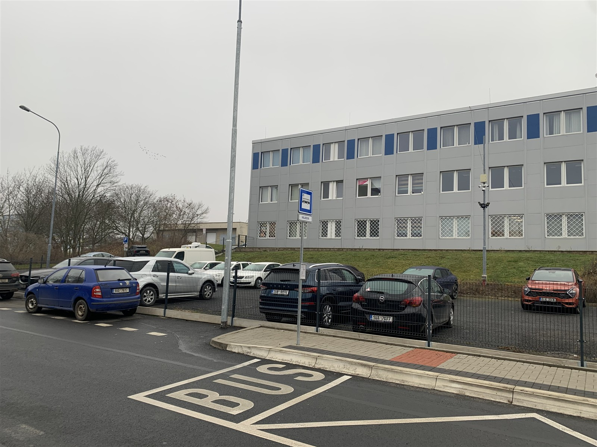

Jasné ceny bez limitu kilometrů
Cenu znáte předem a ujeté kilometry neúčtujeme. Půjčení auta v Mostě je díky tomu přehledné od začátku.
Autopůjčovna OKAUTA v Mostě
Osobní auta i dodávky bez limitu kilometrů. Zavoláte, domluvíme dostupnost a vůz připravíme k předání.
Rezervace a poptávka
Zavolejte nám nebo pošlete nezávaznou poptávku. Dostupnost vozu vám rychle potvrdíme.
Proč OKAUTA
OKAUTA je autopůjčovna v Mostě pro půjčení osobních aut, půjčení dodávky i dlouhodobý pronájem. Vůz předáváme na adrese Báňská 845, Most a vše řešíme rychlou telefonickou domluvou.
Cenu znáte předem a ujeté kilometry neúčtujeme. Půjčení auta v Mostě je díky tomu přehledné od začátku.
Rezervace probíhá telefonem, takže rychle ověříte dostupnost i nejlepší vůz pro vaši cestu.
Auto na jeden den, delší opravu vlastního vozu i měsíční firemní využití.
Vozy jsou průběžně čištěné a dezinfikované ozonem, aby každé předání působilo čistě a profesionálně.
Vozový park
Vyberte si osobní auto nebo dodávku a rovnou zavolejte. Půjčení auta v Mostě, pronájem dodávky i měsíční pronájem potvrdíme nejrychleji telefonicky.
Jak to funguje
Osobní vůz nebo dodávku podle účelu cesty.
Telefonicky ověříme dostupnost a rezervaci.
Stačí OP nebo pas, řidičský průkaz a hotovost na vratnou kauci.
Vůz předáváme s plnou nádrží a jasnými podmínkami.
Podmínky pronájmu
Recenze zákazníků
Vybrané slovní recenze zákazníků z Google profilu OKAUTA.
První zkušenost se zapůjčením vozu a jsem velice rád, že jsem zvolil právě tuto půjčovnu. Vstřícný a ochotný majitel a domluva na špičkové úrovni.
Velká vstřícnost a nadstandartní ochota, i když jsem auto potřeboval na poslední chvíli a o svátcích. Vozidlo v dobrém stavu, co bylo domluveno, to platilo. Doporučuji.
Auto připravené v domluveném čase, majitel pohodový típek, vstřícný. S autem žádný problém. Upřímně doporučuji.
Pujčuji pravidelně, skvělý přístup a fér jednání. V Mostě není lepší autopujčovna.
Majitel byl velmi milý a ochotný, vše bylo bez problému, skvělá cena. Mohu jen doporučit.
Dnes vraceno, půjčeno na jeden den, pán úplně super, strašně příjemný a ochotný, vše proběhlo dle domluvy, mohu jen doporučit.
FAQ
Nejrychlejší odpověď na dostupnost konkrétního vozu dostanete telefonicky.
ZavolatAno. Vozy připravujeme podle aktuální sezony, aby pronájem dával smysl i z pohledu bezpečnosti a běžného provozu.
Ne, dálniční známka není standardně zahrnuta v ceně. Pokud ji pro cestu potřebujete, domluvte se s námi při rezervaci nebo převzetí vozu.
Ne. Ujeté kilometry neúčtujeme. Cena pronájmu je díky tomu jasná hned při rezervaci.
Ano. Délku zapůjčení lze upravit po domluvě podle dostupnosti konkrétního vozu a návazných rezervací.
Ne. Vozy OKAUTA jsou určeny pro použití v České republice a do zahraničí je nepůjčujeme.
Pronájem se hradí předem. Vratná kauce se skládá při převzetí vozu pouze v hotovosti.
Nejprve zajistěte bezpečnost osob a místa. Poté ihned volejte OKAUTA na +420 602 88 00 22; podle situace také policii nebo asistenční službu.
Kontakt
